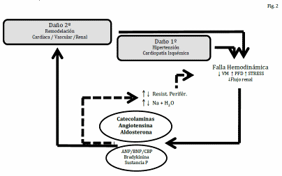
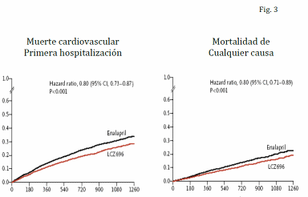
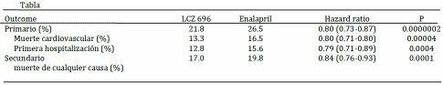
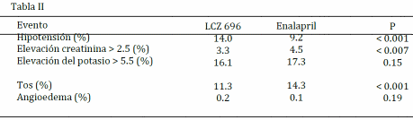

N Engl J Med 2014;371:993-1004.
John J.V. McMurray, Milton Packer, Michael R. Zile e Investigadores del estudio de Comparación Prospectiva del ARNI (Angiotensin Receptor-Neprisylin inhibitor) with ACEI (Angiotensin Converting Enzyme Inhibitor) to Determine Impact on Global Mortality and Morbidity in Heart Failure Trial (PARADIGM HF)
ANTECEDENTESLos inhibidores de la enzima convertidora de la angiotensina (IECA) han sido la piedra fundamental en el tratamiento de la insuficiencia cardíaca (IC) con fracción de eyección (FE) reducida. El tratamiento a largo plazo con enalapril disminuyó el riesgo relativo de muerte en un 16% entre los pacientes con síntomas leves a moderados.
La neprilisina, una endopeptidasa neutral, degrada varios péptidos vasoactivos endógenos, como péptidos natriuréticos, bradiquinina y adrenomodulina. La inhibición de la neprilisina produce un aumento de los niveles de estas sustancias contrarrestando la sobreactivación neurohormonal que contribuye a la vasoconstricción, retención de sodio y la remodelación miocárdica adaptativa.
El LCZ696 es un fármaco que consiste en la unión del “Sacubitril” inhibidor de la neprilisina (AHU377) y el Valsartán, inhibidor del receptor de angiotensina.
OBJETIVOComparar si los efectos a largo plazo del inhibidor del receptor de angiotensina y de la neprilisina LCZ696 sobre la morbilidad y mortalidad son superiores a los del enalapril en pacientes con insuficiencia cardiaca con fracción de eyección reducida.
DISEÑO DEL ESTUDIOEstudio internacional, multicéntrico, randomizado, doble ciego.
# 8442 pacientes de 63.8 años de edad media, 22% de sexo femenino, con IC clase funcional (CF) II (70%), III (24%) o IV (0.8%) y FE = 40% y luego = 35% fueron randomizados:
# 4187 recibieron LCZ696 (200 mg dos veces al día).
# 4212 recibieron enalapril (10 mg dos veces al día).
Los pacientes debían tener un nivel plasmático de péptido natriurético tipo B (BNP) de al menos 150 pg/ml (o un nivel de NT pro-BNP de = 600 pg/ml) o, si habían sido internados por insuficiencia cardiaca dentro de los 12 meses previos, un BNP de al menos 100 pg/ml (o un NT pro-BNP = 400 pg/ml).
En un comienzo los pacientes se sometieron a un tratamiento simple ciego con enalapril (10 mg dos veces al día) durante 2 semanas. Si no existían efectos adversos se continuaba con un tratamiento simple ciego con LCZ696 durante un adicional de 4 a 6 semanas (dosis inicial 100 mg dos veces al día que se aumentaba a 200 mg dos veces al día). Para evitar el riesgo de angioedema causado por la superposición de la inhibición de la ECA y la neprilisina se suspendió el enalapril el día previo al inicio del LCZ696 y se suspendió el LCZ696 el día previo a la randomización.
Los pacientes que no tuvieron efectos adversos a las dosis target fueron randomizados a un tratamiento doble ciego con enalapril o LCZ696.
Punto final primario: compuesto de muerte de causa cardiovascular y/o hospitalización por IC, pero el estudio fue diseñado para detectar diferencias en las tasas de muerte por causas cardiovasculares.
Puntos finales secundarios: tiempo hasta la muerte de cualquier causa, cambios desde el basal hasta los 8 meses del score clínico (KCCQ), tiempo hasta el inicio de fibrilación auricular y tiempo hasta la disminución de la función renal (definida como daño renal terminal, disminución del filtrado glomerular de al menos 50% o disminución mayor a 30 ml/min/1.73 m2).
RESULTADOSEl estudio debió suspenderse prematuramente luego de un seguimiento a 27 meses por el beneficio del LCZ696 en comparación al enalapril.
1. Hubo una reducción significativa en el punto final primario en los pacientes que recibieron LCZ696 vs los que recibieron enalapril (21.8% vs 26.5%, HR en grupo LCZ696 0.80; IC 95% 0.73-0.87; p < 0.001).
2. Hubo una reducción significativa en la tasa de muerte de causas cardiovasculares en el grupo que recibió LCZ696 vs enalapril (13.3% vs 16.5%, HR 0.80, IC 95% 0.71-0.89, p < 0.001).
3. Hubo una reducción significativa en la tasa de internación por insuficiencia cardiaca en el grupo que recibió LCZ696 vs enalapril (12.8% vs 15.6%, HR 0.79, IC 95% 0.71-0.89, p < 0.001).
4. Hubo una reducción significativa en la tasa de muerte de cualquier causa en el grupo que recibió LCZ696 vs enalapril (17% vs 19.8%, HR 0.84, IC 95% 0.76-0.93, p < 0.001).
5. El LCZ696 disminuyó en forma significativa los síntomas y la limitación física de la insuficiencia cardiaca (p = 0.001)
6. No hubo diferencias significativas entre los grupos en el punto final secundario de fibrilación auricular (p = 0.84) y disminución de la función renal (p= 0.11).
Con respecto a la seguridad, los pacientes que recibieron LCZ696 tuvieron:
1. Mayor proporción de hipotensión sintomática (14% vs 9,2%, p<0,001), pero en general no requirió la suspensión del tratamiento.
2. Menor proporción de aumentos en los niveles de creatinina sérica = 2,5 mg/dl (3,3% vs 4,5% p=0.007), menor hiperpotasemia > 6 mmol/l (4,3% vs 5,6%,p<0.007) y menor tos (11,3% vs 14,3%, p<0.001).
3. La incidencia de angioedema fue muy baja (19 pacientes en LCZ696 vs 10 pacientes en enalapril p=0.13) y sin diferencias estadísticamente significativas entre ambos grupos. No hubo casos de angioedema que comprometiese la vía aérea o que requiriese protección mecánica de la vía aérea. CONCLUSIONES
El LCZ696 fue superior al enalapril en reducir el riesgo de muerte y hospitalización por insuficiencia cardiaca.
COMENTARIOLos inhibidores de la enzima de conversión (IECA) han constituido el pilar del tratamiento de la insuficiencia cardíaca y baja fracción de eyección. El enalapril ha demostrado en varios estudios reducir la mortalidad en un 16% en pacientes con IC leve a moderada. Los beneficios sobre la mortalidad de los antagonistas de los receptores angiotensina II (ARA II) son al menos, inconsistentes. Años más tarde, la adición de los beta-bloquentes y los antagonistas de los receptores de aldosterona ha mostrado una reducción significativa sobre la mortalidad del 30-35% y 22-30% respectivamente.
El LCZ696 es un inhibidor dual del sistema renina-angiotensina-aldosterona (valsartán) asociado a un inhibidor de la neprilisina (sacubitril, AHU377. La neprilisina es una endopeptidasa neutra que degrada a varios péptidos vasoactivos endógenos como la bradiquinina, péptidos natriuréticos y adrenomodulina que son importantes para el mantenimiento de la homeostasis. El LCZ696 bloquea la acción de la neprilisina, contrarrestando la sobreactivación neurohormonal y generando incremento de los niveles de péptidos natriuréticos, que tienen propiedades vasodilatadoras, facilitando la excreción de sodio, con probable efecto beneficioso sobre el remodelado miocárdico.
En este estudio de pacientes con insuficiencia cardiaca y fracción de eyección reducida la inhibición simultanea del receptor de la angiotensina II y de la neprilisina con LCZ696 fue más efectiva para reducir el riesgo de muerte de causa cardiovascular y de internación por insuficiencia cardiaca que la inhibición de la enzima convertidora de angiotensina con enalapril. El LCZ696 también fue superior al enalapril en reducir el riesgo de muerte de cualquier causa y en reducir los síntomas y la limitación física de la insuficiencia cardiaca.
El beneficio del LCZ696 se demostró en forma temprana y en pacientes que ya estaban recibiendo otras drogas que mejoran la sobrevida, como los betabloqueantes y los antagonistas del receptor de mineralocorticoides.
El LCZ696 mostró una reducción del 20% en la mortalidad cardiovascular (CV) y del 16% en la mortalidad total, comparada con el enalapril. El número necesario de pacientes a tratar es de 32 para reducir una muerte CV y de 21 para reducir una muerte CV u hospitalización.
Su perfil de seguridad fue superior al enalapril; menos pacientes presentaron tos, insuficiencia renal e hiperkalemia. La hipotensión arterial fue más frecuente con el LCZ696, pero raramente motivó suspensión del tratamiento. No se observaron casos de angioedema, que fue un evento adverso grave en trabajos previos con omapatrilat (inhibidor dual de la ECA y la neprilisina).
En resumen, el LCZ696 fue superior al enalapril en reducir el riesgo de muerte y hospitalización por IC. La magnitud el beneficio soporta un “cambio de paradigma” en el manejo de la IC crónica con FEVI deprimida ya que parece que la inhibición combinada del receptor de angiotensina y la neprilisina es superior a la inhibición aislada del sistema renina angiotensina.
Historia Natural del Tratamiento de la Insuficiencia Cardíaca Crónica
La Fig 1 es una representación gráfica de lo que podría considerarse como la historia natural del tratamiento de la insuficiencia cardíaca (IC). Pocas son las intervenciones que demostraron ser efectivas en mejorar la sobrevida. Muchas de las hipótesis probadas fueron ineficaces, ya sea neutras, o decididamente perjudiciales al incrementar la mortalidad.
Solo las estrategias que inducen un bloqueo neurohomonal, como los inhibidores de la enzima convertidora (1--2), el bloqueo de la angiotensina II (3), el bloqueo de la aldosterona (4) y los betabloqueantes (5--6), redujeron la mortalidad.
A ellos se les pueden agregar la resincronización (7) y el desfibrilador implantable (8), aunque estas intervenciones se aplican a un número reducido de pacientes con IC.
En los últimos 15 años han sido numerosos los intentos para hallar una nueva alternativa farmacológica, que a la postre resultaron fallidos.

Fig.1: Efecto de diferentes estrategias sobre mortalidad de cualquier causa expresado por el riesgo relativo.
En color verde se ilustran las intervenciones que redujeron la mortalidad en nivel estadísticamente significativo y en rojo las que la incrementaron, también en forma significativa; el amarillo corresponde fármacos con efecto neutro.
Regresando a la Fisiopatología
La Fig 2 Ilustra los fundamentos fisiopatológicos de la progresión de la insuficiencia cardíaca (IC). La hipertensión y la cardiopatía Isquémica, etiologías más frecuentes de la IC, son los determinantes del daño primario que inicia la progresión de la enfermedad. La consecuente falla hemodinámica implica reducción del volumen minuto (?VM), ascenso de la presión de fin de diástole (?PFD), con mayor de stress parietal. Esta condición conduce a la activación neurohormonal, con aumento de catecolaminas, angiotensina y aldosterona. Se trata de un mecanismo que pretende compensar la falla de bomba pero que interpreta equivocadamente la IC como una condición de hipovolemia. Estas neurohormonas producen taquicardia con aumento del inotropismo (catecolaminas) y vasoconstricción con retención de sodio y agua (angiotensina y aldosterona). Las catecolaminas inducen per se daño miocárdico directo, mientras que la angiotensina y aldosterona elevan las condiciones de carga generando el círculo vicioso determinante de la progresión de la enfermedad. Se trata, podría decirse, de un componente “mecánico”. Pero además, la angiotensina y la aldosterona producen en forma crónica, alteraciones tisulares (hipertrofia y fibrosis) que afectan al miocardio, a los vasos y al riñón generando una remodelación desfavorable o daño secundario de todos los componentes del sistema cardiovascular. Este segundo mecanismo, que podría denominarse componente “biológico” en contraposición al “mecánico”, es fundamental en la progresión del síndrome.
En conclusión la evolución de la IC depende de un potencial nuevo daño primario, pero sobre todo, es consecuencia de los mecanismos mal adaptativos.
Ahora bien, la activación neurohormonal tiene un segundo componente cuyo efecto es diametralmente opuesto. Los factores natriuréticos, ANP, BNP y CNP inducen vasodilatación, natriuresis y antiproliferación, inhibiendo la remodelación o daño secundario. Sin embargo el efecto favorable de estas neuhormonas queda neutralizado, en parte, por una regulación en menos de los receptores correspondientes, pero sobre todo, por una enzima denominada neprilisina o NEP (endopeptidasa neutra) que degrada dichos factores. De modo que, en esencia, sus efectos son nulos en cuanto a detener o atenuar la progresión de la IC, no modificando sustancialmente la evolución del síndrome.
El Tratamiento Farmacológico en 2014La estrategia farmacológica, que no ha variado sustancialmente en muchos años, se basa en el bloqueo neurohormonal, de la descarga adrenérgica con betabloqueantes, y del sistema renina--angiotensina--aldosterona con inhibidores de la enzima de conversión (IECA), bloqueadores de los receptores de la angiotensina y de la aldosterona.
Los IECA y el bloqueo AT II reducen la mortalidad de 13%/año (con placebo) a 11%/año, evitando dos muertes por cada 100 pacientes por cada año de tratamiento. (No habiendo diferencias entre ambas, el efecto contra placebo es de similar magnitud para los dos fármacos). Sobre este beneficio, los BB, amplían este beneficio reduciendo la mortalidad de 12%/año a 9%/año, con una diferencia neta de 3 vidas por año de tratamiento. Finalmente el bloqueo de la aldosterona con una disminución de 13%/año a 11%/año implica un beneficio adicional de otras dos vidas. (Dicho efecto no corresponde al estudio RALES que incluyó pacientes sin betabloqueantes, sino al comprobado en estudios posteriores con esplerenone, de similares propiedades y comparable resultado clínico al de la espironolactona) (1--6).
Recuperando una Hipótesis
Es factible mediante una intervención farmacológica, bloquear simultáneamente el sistema renina--angiotensina--aldosterona, y elevar el nivel de las hormonas natriuréticas? Se trata de alcanzar, mediante un doble efecto la inhibición de un sistema con persistencia de la activación del otro. Tal vez habría una potenciación de ambos efectos cuyo resultado clínico se exprese en reducción significativa de la morbimortalidad.
Esta hipótesis ya fue evaluada en un ensayo que comparó, en pacientes con IC, el enalapril vs omapatrilat, fármaco que bloquea la enzima convertidora y neutraliza la neprilisina (9). El estudio no mostró diferencias significativas entre ambas intervenciones. Un ensayo con la misma base conceptual pero con una nuevo desarrollo farmacológico, será efectivo?
El LCZ 696 es una formulación farmacológica que en una única molécula incorpora dos principios activos: valsartan que bloquea el receptor de la angiotensina II y sacubitril que inhibe la neprilisina (10--11). Doscientos mg de LCZ 696 tiene el efecto clínico de 160 mg de valsartán. Además al administrar valsartán junto al sacubitril se aumenta un 40% su biodisponibilidad en comparación a su administración sola. De modo LCZ 696 no es meramente la administración de dos drogas en forma conjunta ya que hay complejas interacciones farmacocinéticas.
Debido a que en el tratamiento de la IC el enalapril es la intervención estándar, confirmar la probable superioridad del LCZ 696 sobre aquél tendría una relevancia clínica mayor, de modo que comparte el mecanismo básico de acción con LCZ 696.
El estudio PARADGM--HF (12)
En este estudio se comparó el fármaco LCZ 696 con enalapril. Es un ensayo clínico controlado, randomizado, doble ciego, que incluyó 8442 pacientes con IC moderada y fracción de eyección, inicialmente inferior a 0.40, que luego mediante una enmienda al protocolo se disminuyó a 0.35. La dosis de LCZ 696 fue 200 mg dos veces por día y la de enalapril 10 mg dos veces por día. El punto final del estudio fue la tasa combinada de mortalidad cardiovascular y re--internación por IC; en los puntos secundarios se incluyó, entre otros, la mortalidad por cualquier causa.
El estudio comprendió un período de doble run--in. En todos los pacientes que reunían las condiciones de inclusión se tituló el enalapril en dosis progresivas hasta 20 mg diarios. En esta fase, 10% de los pacientes inicialmente seleccionados fueros discontinuados por efectos adversos. Los restantes ingresaron a un run--in de LCZ 696 con titulación progresiva hasta 400 mg diarios; en este período otros 10% de pacientes fueros discontinuados del estudio.
El ensayo se interrumpió, según pautas preestablecidas, cuando se alcanzó una disminución altamente significativa del punto final principal.
La Fig.3 muestran las curvas de Kaplan Meier para la tasa combinada de muerte cardiovascular y re--internaciones por IC y de mortalidad por cualquier causa.
En la Tabla I se muestran las frecuencias de eventos en se compararon ambos grupos. En todos ellos se observa una diferencia altamente significativa a favor del LCZ 696.
En cuanto a los efectos colaterales (Tabla II) no hubo diferencias de significado clínico entre los grupos.
Los autores afirman que este estudio constituye una evidencia robusta que confirma que la inhibición combinada del receptor de la angiotensina y de la neprilisina es superior a la inhibición aislada del sistema renina--angiotensina.
Se concluye que LCZ 696 es una intervención eficaz al reducir la morbimortalidad de la IC crónica.
El “Juicio del Trial”- Los hallazgos, en cuanto al beneficio, son consistentes?.
El estudio fue interrumpido según pautas muy conservadoras con valores de p extremadamente bajos en cada análisis interino, todo ello según un plan establecido priori. Por otro lado, el tiempo medio de seguimiento, de 27 meses, es adecuado para un ensayo en insuficiencia cardíaca.
La reducción de la mortalidad cardiovascular y de la hospitalización por IC fue similar, con un valor de p de 0.0004. La reducción relativa del riesgo para mortalidad global (0.16), fue inferior a la de mortalidad cardiovascular (0.20), existiendo una proporción coherente entre ambos efectos. El valor de p para mortalidad de cualquier causa fue 0.0001, con un intervalo de confianza extremadamente estrecho (0.84, 0.76--0.93).
En las curvas de Kaplan--Maier, tanto para el punto final como para mortalidad de cualquier causa, se observa una separación sostenida, progresiva y sin cruzamientos en la incidencia de eventos de los grupos en comparación.
Finalmente la reducción del punto final y de la mortalidad cardiovascular ocurrió por igual en todos los subgrupos considerados.
- El resultado del estudio tiene alta significación estadística pero, tiene “significación clínica”?.
Por cada 100 pacientes tratados durante un año se evitan aproximadamente 1.25 muertes de cualquier causa, o expresado de otra forma, es necesario tratar 80 pacientes durante un año para evitar una muerte. A todas luces el hallazgo tiene impacto en la práctica asistencial.
- Los efectos colaterales, neutralizan el beneficio ?.
La frecuencia de hipotensión sintomática fue mayor con LCZ 696 y la de tos mayor con enalapril; La incidencia de angioedema fue extremadamente baja en ambos grupos. Estos hallazgos, sin embargo, quedan condicionados al diseño del estudio. En la fase de run--in se excluyeron pacientes que presentaban estas complicaciones, reduciendo la posibilidad de ambos eventos en el seguimiento luego de la randomización.
- El control fue adecuado?; la dosis de enalapril, es la habitual para pacientes con insuficiencia cardíaca?.
Los autores concluyen que 10 mg dos veces por día es la dosis estándar empleada en la práctica clínica, constituyendo un excelente control para su comparación con otro fármaco Esta conclusión podría cuestionarse a dos puntas.
Las guías de tratamiento sugieren titular el enalapril en forma progresiva hasta alcanzar la máxima dosis tolerada. Frecuentemente, el paciente con falla cardíaca recibe 2.5 mg de enalapril dos veces al día, ya sea por intolerancia o por preferencia médica. Así mismo, en ciertos casos la dosis puede superar los 30 mg diarios. Ambas situaciones, la ausencia de enfermos en el grupo control tratados con sub--dosis o con supra--dosis de enalapril, podrían afectar la transferencia a la práctica de este ensayo clínico.
Sin embargo estas consideraciones quedan limitadas por dos razones. El probable beneficio de dosis reducidas de enalapril es solo una inferencia, ya que en los ensayos clínicos la proporción de pacientes tratados con estas dosis fue mínima y a todas luces insuficiente para concluir al respecto. Por otro lado, dosis mayores son extremadamente infrecuentes.
En conclusión, el enalapril en la dosis empleada fue control activo indiscutible sobre el cual una nueva intervención demuestra superioridad.
- Es la muestra del ensayo representativa y sin sesgos, de la población con insuficiencia cardíaca?
La edad (63 años), clase funcional (72% en CF II y 23% en CF III), la fracción de eyección (0.30) y la etiología isquémica (60%, con 40% con antecedentes de infarto), se corresponden a pacientes con insuficiencia cardíaca moderada.
Es llamativo el elevado antecedente de hipertensión (71%) y la presión arterial al ingreso (media de 122 mm Hg), tratándose de paciente con IC. Estas condiciones puede deberse al período de doble run--in (enalapril y LCZ 696) al incluir solo pacientes que toleraban las dosis preestablecidas de los fármacos en estudio.
Con respecto al tratamiento basal, es el óptimo para enfermos en falla cardíaca moderada.
Tal vez el dato que representa con mayor fidelidad que la “muestra” es representativa, es la mortalidad anual por cualquier causa del grupo control, aproximadamente 9%, nuevamente acorde con IC moderada.
- Como se traslada a la práctica un estudio con un diseño que incluye un período de doble run--in?
En primer lugar no se puede asegurar que el número de pacientes que discontinuaron el estudio por eventos adversos con enalapril y con LCZ 696 fuera similar. Los pacientes intolerantes a LCZ 696 era un grupo seleccionado que ya había demostrado tolerancia al enalapril. Si la secuencia hubiera sido inversa, la proporción de pacientes que interrumpen el estudio en cada grupo podría diferir.
En segundo lugar, y tal vez de mayor significación, luego de su aprobación y ya en la fase de comercialización, cuál será la recomendación para pacientes que no toleren 200 mg dos veces al día de LCZ 696?. Desde aquí se disparan varios interrogantes: se dispondrá de comprimidos en menor dosificación?; en caso de titular, como con enalapril, será sugerida la “máxima dosis tolerada”?; con qué nivel de evidencia se sostiene esta indicación?
- El beneficio clínico, puede haber sido mediado por reducción de la presión arterial?
La media de presión arterial sistólica fue 3.2 mm Hg menor en el grupo tratado con LCZ 6096 en comparación al que recibió enalapril. Análisis estadístico mediante, los autores descartan esta diferencia como factor determinante del efecto clínico. Ahora bien, aunque esa diferencia pueda explicar la reducción de mortalidad, la perfusión renal no se comprometió. En efecto, el aumento de la creatinina fue inferior con LCZ 6096, tal vez por vasodilatación renal. Probablemente por igual mecanismo la elevación de la kalemia fue menor en ese grupo.
- Cuál es la explicación que el ompatrilat no fue superior al enalapril en pacientes con insuficiencia cardíaca?
El omapatrilat inhibe la enzima de conversión y neutraliza la neprilisina. Si bien comparte el mismo objetivo fisiopatológico su mecanismo de acción difiere marcadamente. En efecto, LCZ 696 bloquea el receptor de la ATII (“efecto valsartan”) y la neprilisina (“efecto sacubitril”). Los autores sugieren, además, que la administración una vez al día de omapatrilat fue insuficiente para mantener niveles sanguíneos por 24 hs. Por otro lado, los efectos colaterales (angioedema) fueron muy frecuentes, neutralizando el probable beneficio.
Es también posible que el diseño del estudio, asegurando mediante doble el run--in una población de determinadas características, haya facilitado comprobar el beneficio de la intervención.
El VeredictoFinalmente una nuevo fármaco redujo la mortalidad en la IC moderada, y lo hizo en una proporción clínicamente significativa.
La Fig. 4 grafica el efecto clínico expresado por el número de muertes evitadas por diferentes intervenciones, como el bloqueo de la enzima convertidora o del receptor de la angiotensina, los betabloqueantes y el bloqueo de la aldosterona.
Desde más de 15 años éstas han sido las únicas intervenciones eficaces. Se incorpora ahora el LCZ 696. Sobre el tratamiento convencional se evitan casi 1.5 vidas más por cada 100 pacientes tratados anualmente. El beneficio se potencia necesariamente con menos internaciones, mejores condiciones de vida y mayor inserción social.
Queda un camino por recorrer, desde la aprobación por las agencias reguladoras hasta el veredicto final, que no es sino su aceptación en la práctica por el médico asistencial.
Dr. Arturo Cagide
REFERENCIAS: